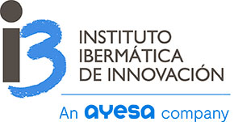
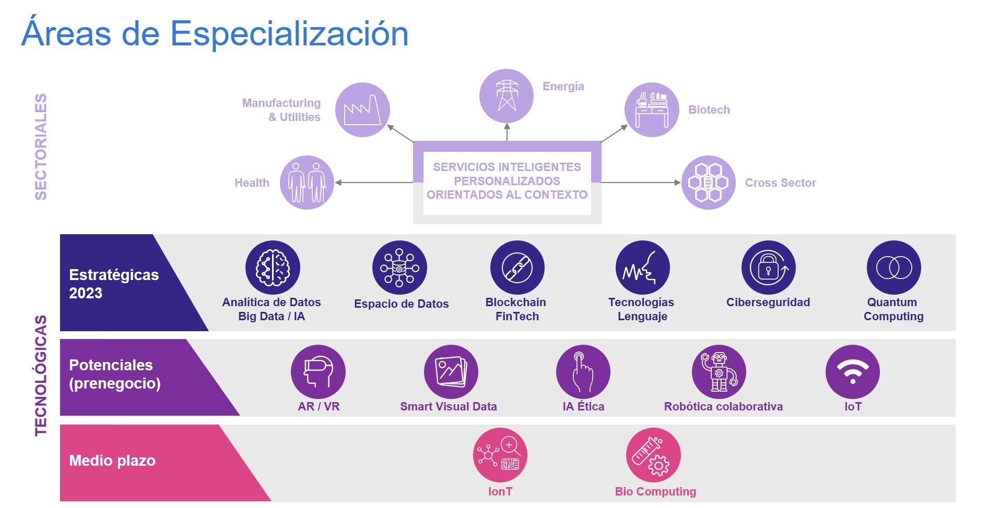

Innovación
Nos apasiona hacer realidad el futuro
Nuestro Instituto Ibermática de Innovación – i3B se configura como la Unidad de I+D+i empresarial de investigación aplicada que busca promover soluciones y servicios innovadores, basados en TIC:-

- Optimizando los procesos de los clientes de Ibermática a partir de la generación de nueva oferta tecnológica y/o sectorial.
- Acompañando a los Sectores en la actividad comercial con clientes y prospects.
- Identificando y lanzando nuevos negocios (sectores, modelos de negocio…) que diversifiquen la actividad del Grupo.
- Incorporando la sistemática de la innovación en las personas y en los procesos de Ibermática.
- Contribuyendo al desarrollo económico y social como agente activo de innovación.
Áreas de Especialización
Catálogo de servicios de innovación
Industria 4.0
Smart Factory, manufacturing avanzado, plataformas globales…SmartTerritory
En base a capas: de gestión, de aplicaciones/servicios, de datos, de conectividad.Desarrollos para la Sanidad
10 años desarrollando múltiples proyectos eHealth.Eficiencia energética
Optimización de consumo, smart grids, analítica energética, curvas de consumo, etc.Modelos de innovación y Knowledge Management
Código Capital Innovación, K2, NLi…Acceso a programas de ayuda a la I+D+i/h3> Programas europeos, nacionales y de CCAA.
Luis Buñuel, 6, Mérida | Teléfono: 902 413 500 | Email: info@ibermatica.com